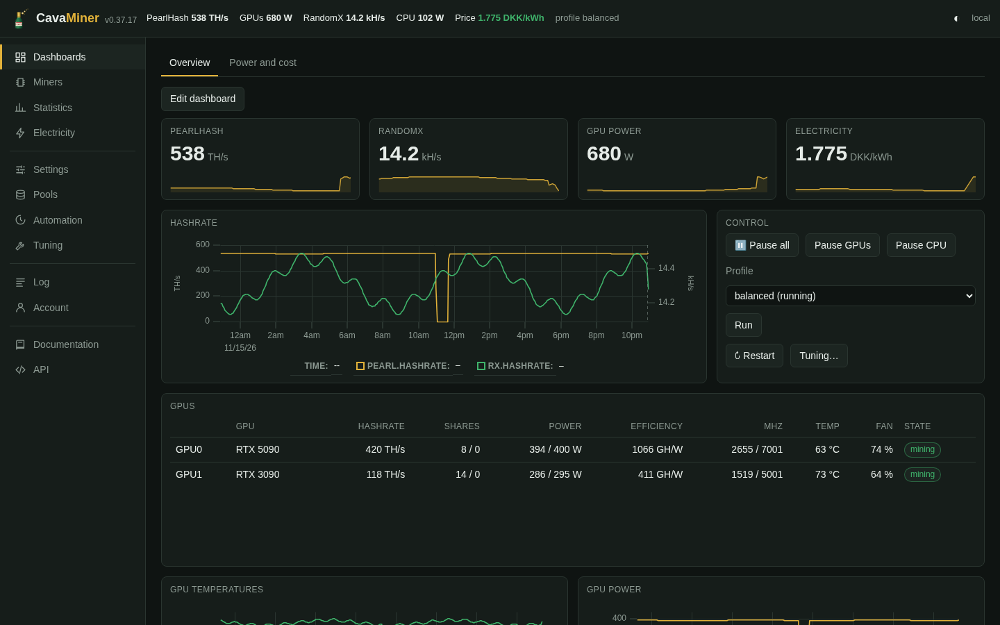
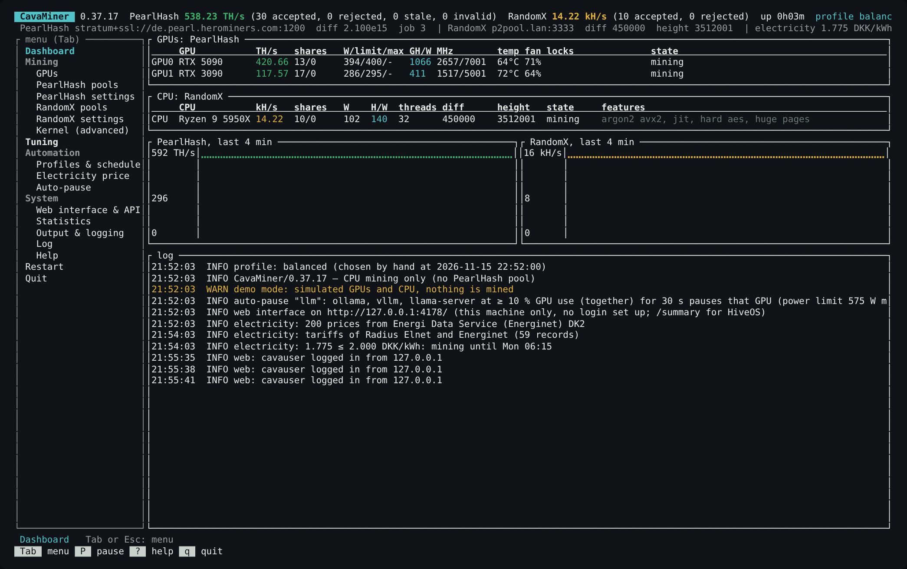

A cryptocurrency miner for PearlHash (Pearl) on NVIDIA GPUs and RandomX (Monero) on CPUs — one process can do both. Linux and Windows.
420 TH/s from one RTX 5090 drawing 394 W: 1067 GH/W. The balanced, undervolted setting the miner's own tuning run found, measured while mining on a pool (benchmarks).
Download 0.37.17 · 2026-11-15 · Linux and Windows, x86-64
Checksums and older versions: releases. Found a bug, or missing something? Report it on GitHub.


Fast
Hand-written CUDA kernels for RTX 30, 40 and 50 series; tuning runs that measure your hardware for the goal you set (kernels, clocks, power limits, undervolting with self-checks) and keep the result.
Mines when power is cheap
Follows the electricity price: 38 price sources in about 40 countries, Danish grid tariffs, cheapest hours, profiles on a schedule.
Out of the way
Pauses automatically while other programs use a GPU, frees its memory, and resumes when they are done.
Yours to watch and control
Web interface with your own dashboards and statistics, two-factor logins, REST API, Prometheus, Home Assistant, a terminal menu.
Hashrates · PearlHash, measured while mining on a pool
| GPU | Stock | Balanced | Best efficiency | Balanced, undervolted | Max, undervolted |
|---|---|---|---|---|---|
| RTX 3070 | 78.5 TH/s at 236 W | 71.8 TH/s at 173 W | 38.2 TH/s at 57 W | 75.6 TH/s at 170 W · 444 GH/W | 83.9 TH/s at 244 W |
| RTX 3090 | 119.4 TH/s at 344 W | 117.3 TH/s at 286 W | 91.8 TH/s at 168 W | – | – |
| RTX 5090 | 410.4 TH/s at 573 W | 372.9 TH/s at 399 W | 200.4 TH/s at 174 W | 420.3 TH/s at 394 W · 1067 GH/W | 430.8 TH/s at 432 W |
Stock: the card as it comes. Balanced: the most efficient setting that keeps 90 % of the highest hashrate. Undervolted: with the clock offset the miner's search found for that card; every card differs (the RTX 5090 shown is the better of two in one rig: the other does 400 TH/s at 398 W balanced and undervolted). The miner's tuning runs measure these settings on your own cards.
RandomX: Ryzen 9 9950X 17.6 kH/s, Ryzen 9 7950X 17.8 kH/s, Ryzen 9 5950X 15.6 kH/s, Ryzen Threadripper PRO 3995WX 50.5 kH/s.
Every setting, the other cards and CPUs, and how it was measured: benchmarks.
Quick start
tar xzf cavaminer-*-linux-x86_64.tar.gz && cd cavaminer-*-linux-x86_64
./cavaminer devices
sudo ./cavaminer -o de.pearl.herominers.com:1200 -u <wallet>.<worker>Windows: unpack the zip, open a terminal as administrator in that folder, .\cavaminer.exe instead of sudo ./cavaminer.
Windows note: the program is not code-signed yet (a signed release will follow). On Windows 11 with Smart App Control on, Windows refuses to start it; otherwise SmartScreen may warn on first start (More info → Run anyway). Details: documentation.
Requirements: Linux x86-64 (glibc ≥ 2.17) or Windows 10/11 x64, an NVIDIA driver ≥ 525 (RTX 50 series ≥ 575) for GPU mining; RandomX runs on any x86-64 CPU. Root (sudo) or an administrator terminal is needed for clock and power control and huge pages. Full instructions: documentation.
Dev fee
CavaMiner is free to download. It mines a share of the time for its development: 1 % of the PearlHash and 1 % of the RandomX mining time (one minute per 100 minutes of mining each). That pays for, among other things, hardware to support and tune for more GPUs and CPUs. While it does, the miner says so in its log, menu and web interface, and the shares are counted apart from yours. Paused time (electricity price, auto-pause, by you) is not counted.